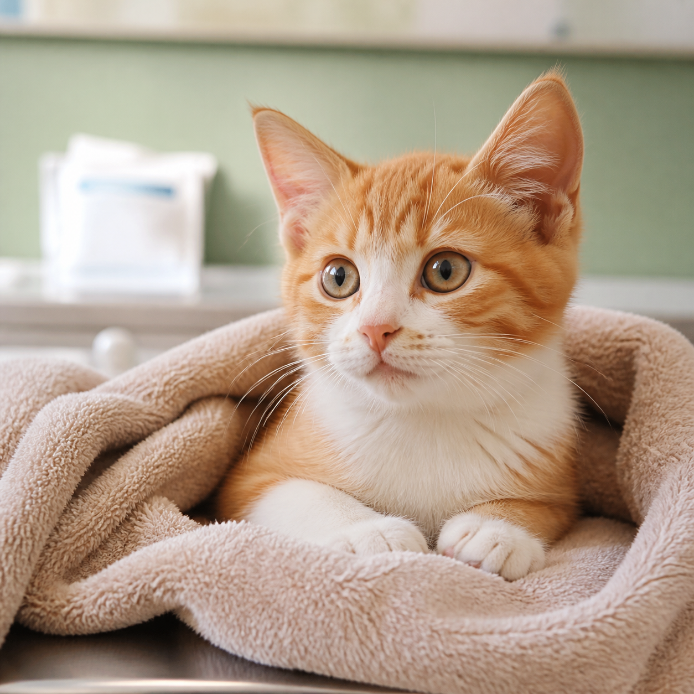
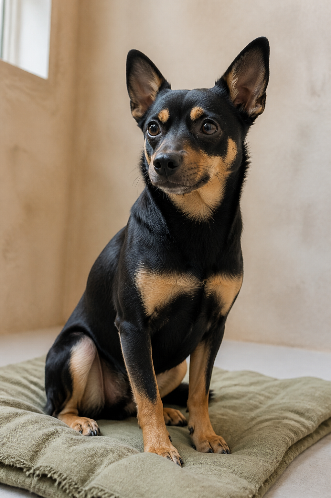
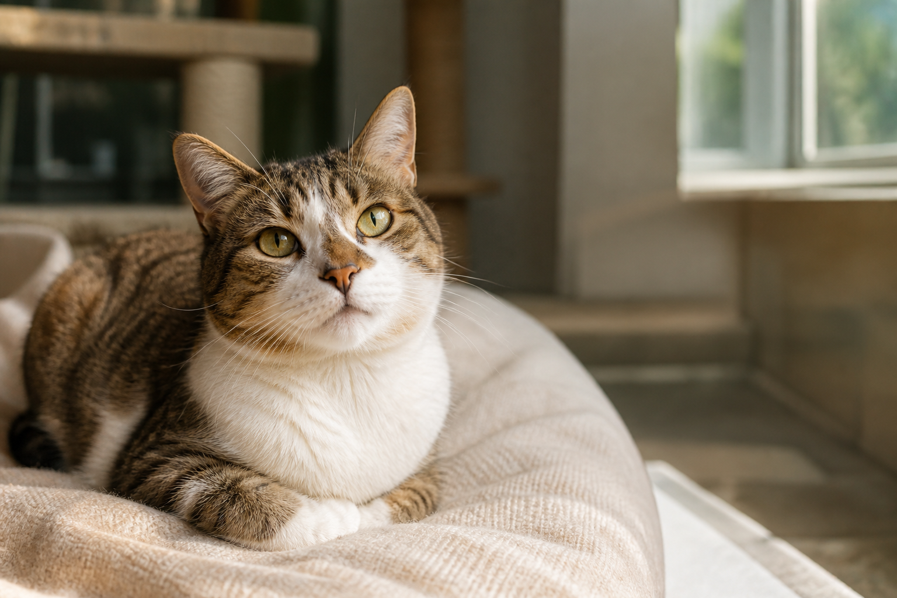
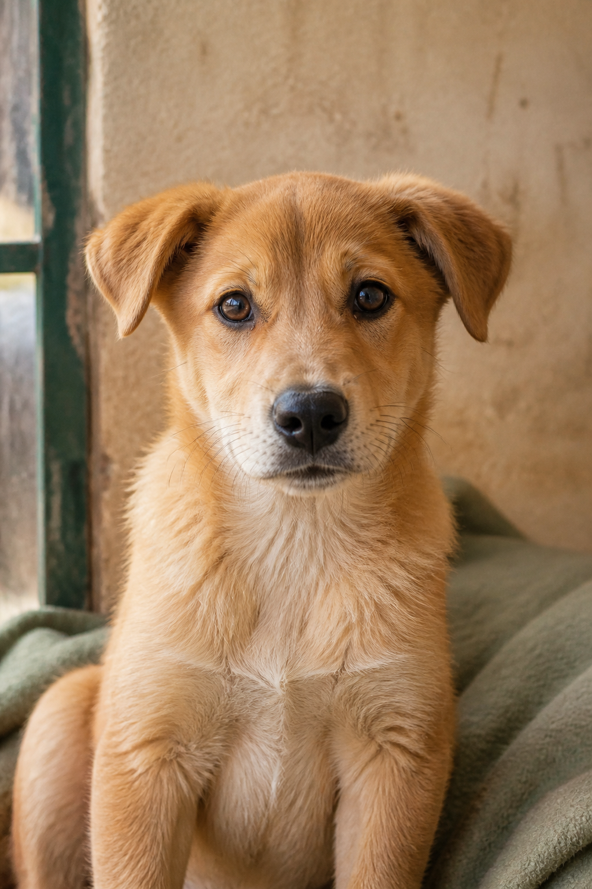

待审核线索
18
较昨日 +6查看全部 →
待处理任务
7
紧急 2 个查看全部 →
待审核申请
12
较昨日 +3查看全部 →
动物档案总数
86
犬 48 · 猫 32 · 其他 6查看详情 →
RESCUE CLUES
等待接取线索

浦东新区花木街道 · 流浪幼猫发现于 08:27 · 11:30 · 线索编号 LS-2026-3010
WAITING_ACCEPT
闵行区七宝镇 · 受伤流浪犬发现于 08:27 · 10:18 · 线索编号 LS-2026-3007
WAITING_ACCEPT
静安区胶州路 · 弃养猫发现于 08:26 · 16:10 · 线索编号 LS-2026-3002
WAITING_ACCEPTACTIVE TASKS
活动救助任务
小区流浪猫救助⌖ 浦东新区花木街道接取于 11:30
WAITING_START小灰 · 伤情检查⌖ 静安区救助站开始于 14:00
IN_PROGRESS
小橘 · 术后转运⌖ 合作医院开始于 09:30
IN_PROGRESSLAST 30 DAYS
救助 / 领养趋势 · 2026-08-01 ～ 2026-08-29
至
线索总数156较上月 +12%
救助成功64成功率 41%
开放领养58较上月 +8
领养迁出32较上月 +6
NOTICE BOARD
公告通知
- 五一假期值班安排 置顶
- 关于开展狂犬疫苗接种的通知
- 领养日活动报名开启
- 物资捐助通道公告（4月）
FR-STAT 完整状态统计
RescueClue · 6 状态
PENDING_REVIEW6
REJECTED12
WITHDRAWN4
WAITING_ACCEPT5
CONVERTED3
CLOSED78
RescueTask · 5 状态
WAITING_START2
IN_PROGRESS3
SUCCESS72
FAILED9
CANCELED5
Animal · 5 状态
TREATING5
OBSERVING4
AVAILABLE22
SUSPENDED2
ADOPTED61
AdoptionApplication · 5 状态
PENDING13
APPROVED61
REJECTED34
WITHDRAWN8
INVALIDATED47
| ID | 地点 | 状态 | 发布时间 |
|---|---|---|---|
| 3001 | 上海市浦东新区某路口 | PENDING_REVIEW | 10:05 |
| 3002 | 上海市静安区某公园 | PENDING_REVIEW | 10:18 |
线索 #3001
2026-08-29 09:48
一只受伤橘猫，后腿疑似外伤
靠近绿化带，行动缓慢
138****8000
| 任务 | 线索 | 救助人员 | 状态 | 操作 |
|---|---|---|---|---|
| 4001 | 3001 | 救助员A | IN_PROGRESS | |
| 4002 | 3005 | 救助员B | FAILED | |
| 4003 | 3007 | 救助员C | WAITING_START |
| ID | 动物档案 | 物种 | 健康摘要 | 状态 | 操作 |
|---|---|---|---|---|---|
| 5001 | 布丁PET-2026-005001 | CAT | 体检正常，已驱虫 | AVAILABLE | |
| 5002 | 小黑PET-2026-005002 | DOG | 术后恢复观察中 | OBSERVING | |
| 5003 | 小橘PET-2026-005003 | DOG | 疫苗 1 针，精神良好 | TREATING |
| 申请 | 动物 | 申请人 | 状态 |
|---|---|---|---|
| 6001 | 布丁 #5001 | 用户A | PENDING |
申请 #6001
目标动物：布丁
CAT · FEMALE · 约8个月 · 当前 AVAILABLE
健康摘要：已绝育 · 体检正常 · 已驱虫 · 疫苗 2 针
领养理由：希望长期照顾，并能承担医疗与生活费用。
住房条件：自有住房，可养宠。
家庭情况：3 人，家人均同意。
养宠经验：曾养猫 5 年，有日常护理经验。
联系方式：138****8000
| 记录ID | 申请ID | 动物 | 领养人 | 领养时间 | 操作 |
|---|---|---|---|---|---|
| 7001 | 5901 | 豆包 #4991 | 用户A #1001 | 2026-08-20 15:00 | |
| 6998 | 5990 | 雪球 #4988 | 用户B #1028 | 2026-08-18 11:20 |
| 回访ID | 领养记录 | 动物 | 提交人 | 内容 | 时间 |
|---|---|---|---|---|---|
| 8001 | 7001 | 豆包 | 用户A | 最近适应得很好，食欲正常。 | 16:00 |
| ID | 标题 | 状态 | 版本 | 操作 |
|---|---|---|---|---|
| 10001 | 周末流浪动物义诊活动 | PUBLISHED | 1 | |
| 10002 | 志愿者招募 | DRAFT | 0 |
| ID | 账号 | 昵称 | 角色 | 状态 | 操作 |
|---|---|---|---|---|---|
| 1001 | petlink_user01 | 小明 | USER | ENABLED | |
| 1002 | rescuer01 | 救助员A | RESCUER | ENABLED | |
| 1048 | user_disabled | 小周 | USER | DISABLED |